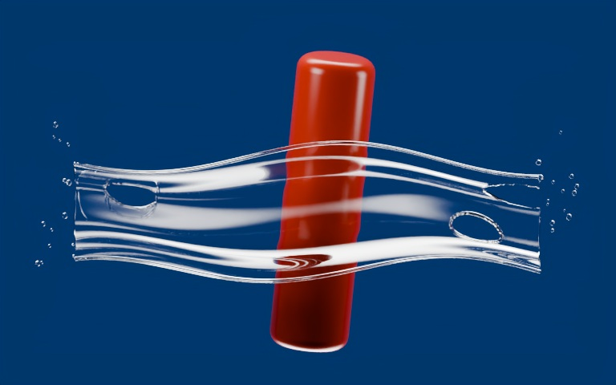

3D / Fluids / A living skill
Water · Product Splash
Broad folds. Rounded margins. Smaller breakup. Build the optical hierarchy, then write down what the next experiment teaches.

Original 768 × 480 component fixture. The detail view enlarges existing pixels; it adds no simulation or image detail.